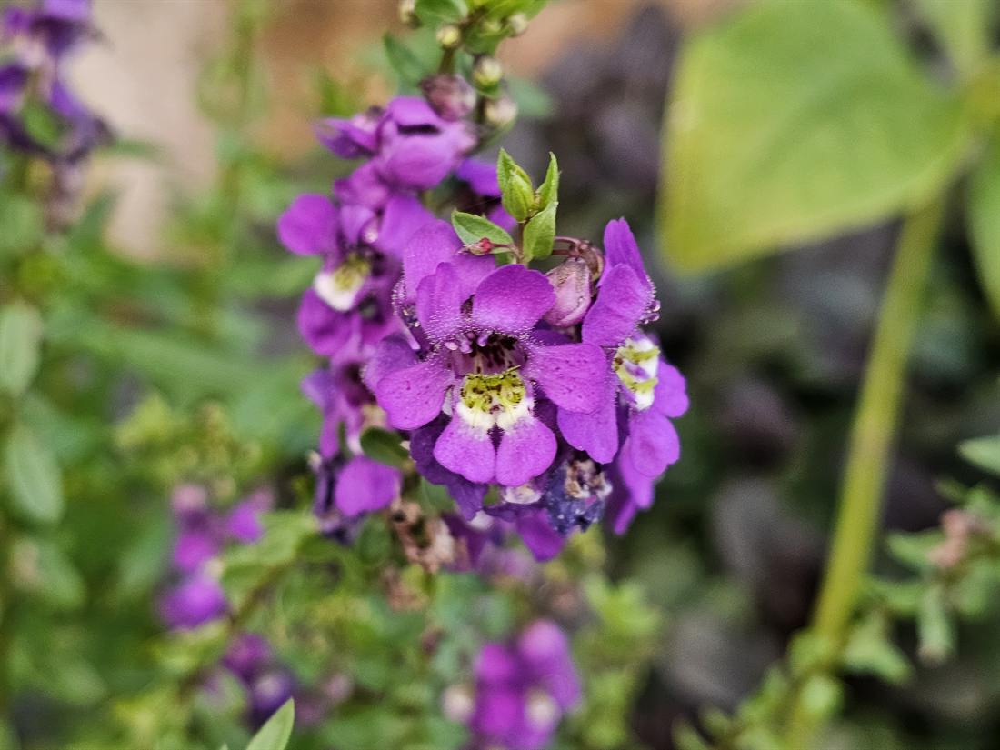
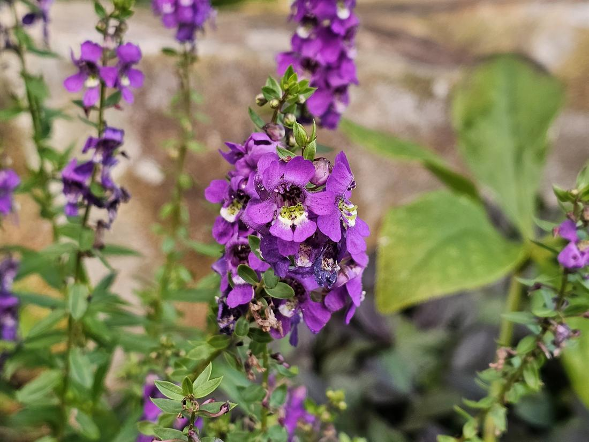

アンゲロニア
Angelonia angustifolia Benth.（園芸品種・紫花）
別名 · サマースナップドラゴン（夏の金魚草）／エンジェルラベンダー
オオバコ科 · Plantaginaceae（アンゲロニア属）── この図鑑で初めての科
燻太さんの言葉「虫を誘ってる形がはっきりわかるね」……そのとおり。しかもこの子は、蜜ではなく「油」で虫を呼ぶ、めずらしい花。
名前と、初めての科
- Angelonia＝南米の現地名から（「天使」を思わせる響きでエンジェルラベンダーとも）。angustifolia＝「細い葉の」。
- 英名サマースナップドラゴン（夏の金魚草）＝同じ科のキンギョソウに似た唇形の花を、夏の暑さの中で咲かせるから。
- ⭐オオバコ科（Plantaginaceae）は、この図鑑で初めての科。仲間はキンギョソウ・ジギタリス・オオバコ・クワガタソウ・リナリア。⭐ジギタリスは心臓の薬（ジゴキシン）の原料＝047 ダリア・056 キカラスウリ・057 ニチニチソウに続く「薬になる植物」の科でもある。
⭐⭐⭐ 燻太さんの「虫を誘ってる形」＝そのとおり、しかも“油の花”
- 燻太さんが見た虫を誘う形——紫の下唇（着地する台）、のどの黄色い斑＋濃紫の斑点（案内板）、その奥へつづく道。ぜんぶ、虫を花の奥へ導くための形。
- ⭐⭐⭐そしてこの花のいちばんの秘密＝「油の花（オイルフラワー）」。花の“のど”のポケットに、蜜ではなく“油”を出す腺毛（エライオフォア）がある。
- ⭐その油を集めに来るのが、専門の蜂＝ハナバチの一種 Centris など（油を集めるための、不つりあいに長い前脚を持つ）。蜂がポケットに前脚を差しこんで油をかき集めると、花の床の出っぱりが蜂の頭を葯と柱頭に押しつけ、花粉が頭につく＝「虫を誘って、確実に受粉させる形」が、まさに見た目に出ている（燻太さんの観察どおり！）。→ 🦋「だれを呼ぶための花か」の小道へ。
- ⭐この小道で、いちばん変わったごほうび：004 ランタナや057 ニチニチソウは「蜜」、054 カノコユリは「夜の蛾」を呼んだ。でもこの子は、蜜でも花粉でもなく「油」を売る（限られた植物だけの特技）。
- ⚠ただし、油を集める蜂は南北アメリカの虫。日本の花壇では、その専門の蜂は来ない（048 カラー・046 サルビアと同じ「専門の客が来ない国の花」）。それでも園芸で殖やされ、暑さに強く、夏じゅう咲く。
⭐ 花の形と、金魚草の遺伝
- 花は左右対称（唇形）＝ハチに「こっち向きで着地して」と決める形（041 ニオイゼラニウム・044 ペンタスと同じ、上下のある花）。全体に腺毛が生えてべたつく。
- ⭐同じ科のキンギョソウ（金魚草）は、花の左右対称がどう決まるか（CYCLOIDEA という遺伝子）や、トランスポゾンによる花色の変化を調べる、古くからの研究植物。→ 燻太さん（分子遺伝学者）には、この“科のつながり”がうれしいはず。おまけをキンギョソウにしたのは、この縁。